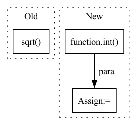

Pattern ID :36562

Before Change
maxlen, batch_size = src.shape[0], src.shape[1] // src.shape = [215, 128, 72]
Question: why 72 features (36 feature + 36 mask)?
src = self.encoder(src) * math.sqrt(self.d_model) // linear layer: 72 --> 32
pe = self.pos_encoder(times) // times.shape = [215, 128], the values are hours.
// pe.shape = [215, 128, 32]
After Change
maxlen, batch_size = src.shape[0], src.shape[1] // src.shape = [215, 128, 72]
Take the observations, not the mask
src = src[:, :, :int(src.shape[2]/2)] // remove the mask info
Question: why 72 features (36 feature + 36 mask)?
src = self.encoder(src) //* math.sqrt(self.d_model) // linear layer: 72 --> 32
In pattern: SUPERPATTERN
Frequency: 3
Non-data size: 3
Instances
Fragment ID: 103931847
Project Name: mims-harvard/raindrop
Commit Name: 374ec29c5d9a02d9eea95cf7e681df1b9996406c
Time: 2021-09-15
Author: xiang.alan.zhang@gmail.com
File Name: code/models_rd.py
M Class Name: TransformerModel2
N Class Name: TransformerModel2
M Method Name: forward(5)
N Method Name: forward(5)
M Parent Class: nn.Module
N Parent Class: nn.Module
M File Name: code/models_rd.py
N File Name: code/models_rd.py
M Start Line: 215
M End Line: 251
N Start Line: 215
N End Line: 258
'>
Before Change
if low_rank:
low_rank = int(low_rank)
else:
low_rank = int(math.sqrt((self.state_rank * self.measure_rank) / (self.state_rank + self.measure_rank)))
self.lr1 = torch.nn.Parameter(.1 * torch.randn(self.state_rank, low_rank))
self.lr2 = torch.nn.Parameter(.1 * torch.randn(low_rank, self.measure_rank))
else:
After Change
low_rank = int(low_rank)
else:
ub = (len(self.full_states) * self.measure_rank) / (len(self.full_states) + self.measure_rank)
low_rank = int(math.sqrt(ub))
self.lr1 = torch.nn.Parameter(.1 * torch.randn(len(self.full_states), low_rank))
self.lr2 = torch.nn.Parameter(.1 * torch.randn(low_rank, self.measure_rank))
else:
raise ValueError(f"Unrecognized method `{method}`")
'>
Fragment ID: 103931849
Project Name: strongio/torchcast
Commit Name: f47fb0ea7f8de78c4034c228363a96dc283c6d75
Time: 2021-06-28
Author: jacob.dink@strong.io
File Name: torchcast/exp_smooth/smoothing_matrix.py
M Class Name: SmoothingMatrix
N Class Name: SmoothingMatrix
M Method Name: __init__(8)
N Method Name: __init__(8)
M Parent Class: torch.nn.Module
N Parent Class: torch.nn.Module
M File Name: torchcast/exp_smooth/smoothing_matrix.py
N File Name: torchcast/exp_smooth/smoothing_matrix.py
M Start Line: 61
M End Line: 88
N Start Line: 60
N End Line: 84
'>
Before Change
self.bb = self.add_weight(name="positional_embedding", shape=(kk_blocks, num_heads), initializer="zeros", trainable=True)
strides = int(tf.math.ceil(tf.math.sqrt(float(kk_blocks / qq_blocks))))
q_blocks_h = q_blocks_w = int(tf.math.sqrt(float(qq_blocks)))
k_blocks_h = k_blocks_w = int(tf.math.sqrt(float(kk_blocks)))
x1, y1 = tf.meshgrid(range(q_blocks_h), range(q_blocks_w))
x2, y2 = tf.meshgrid(range(k_blocks_h), range(k_blocks_w))
After Change
k_blocks_h = q_blocks_h * strides
while kk_blocks % k_blocks_h != 0:
k_blocks_h -= 1
k_blocks_w = int(kk_blocks / k_blocks_h)
else:
k_blocks_h, k_blocks_w = self.key_height, int(kk_blocks / self.key_height)
self.k_blocks_h, self.k_blocks_w = k_blocks_h, k_blocks_w
// print(f"{q_blocks_h = }, {q_blocks_w = }, {k_blocks_h = }, {k_blocks_w = }, {strides = }")
'>
Fragment ID: 103931851
Project Name: leondgarse/keras_cv_attention_models
Commit Name: 4b675139fef68fbaf97bd575c11ea1736ee6de94
Time: 2022-07-22
Author: leondgarse@gmail.com
File Name: keras_cv_attention_models/levit/levit.py
M Class Name: MultiHeadPositionalEmbedding
N Class Name: MultiHeadPositionalEmbedding
M Method Name: build(2)
N Method Name: build(2)
M Parent Class: keras.layers.Layer
N Parent Class: keras.layers.Layer
M File Name: keras_cv_attention_models/levit/levit.py
N File Name: keras_cv_attention_models/levit/levit.py
M Start Line: 26
M End Line: 27
N Start Line: 27
N End Line: 40